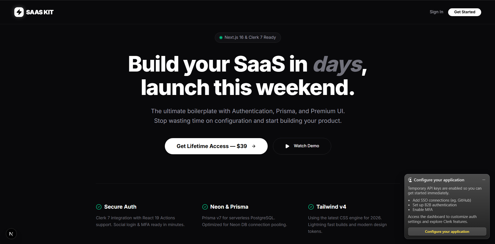

Bangun SaaS Lebih Cepat, Bukan Lebih Ribet.
LumeStack: Boilerplate premium berbasis Next.js 16 dan Prisma untuk mempercepat development aplikasi skala global.
Pelajari Sistem
Arsitektur Sistem Unggulan
Next.js 16 & TS
Menggunakan struktur App Router terbaru dengan Type-Safety maksimal untuk coding yang lebih bersih.
Autentikasi Clerk
Sistem login modern dengan dukungan Social Auth dan MFA yang sudah terintegrasi secara native.
Database Prisma
Manajemen data efisien menggunakan Prisma ORM dan PostgreSQL (Neon) untuk performa serverless.